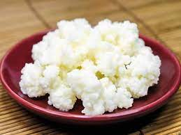

Живой кефирный тибетский гриб

Полученный с его помощью кефир является уникальным лечебным препаратом, помогающим бороться с аллергией,
гипертонией, язвенной болезнью желудка и двенадцатиперстной кишки. Его употребление нормализует кишечную микрофлору.
Кефир, получаемый в результате жизнедеятельности гриба, оказывает общее оздоровительное действие и стимулирует иммунитет.
Кефирный гриб для похудения
.jpg) Настой тибетского молочного гриба снижает вес при ожирении. Весь его секрет в том, что он преобразует жиры в более простые соединения,
которые затем сам же и выводит из организма человека. Для того чтобы похудеть, следует пить настой тибетского молочного гриба ежедневно
через полчаса после еды и один - два раза в неделю устраивать разгрузочные дни.
Настой тибетского молочного гриба снижает вес при ожирении. Весь его секрет в том, что он преобразует жиры в более простые соединения,
которые затем сам же и выводит из организма человека. Для того чтобы похудеть, следует пить настой тибетского молочного гриба ежедневно
через полчаса после еды и один - два раза в неделю устраивать разгрузочные дни.